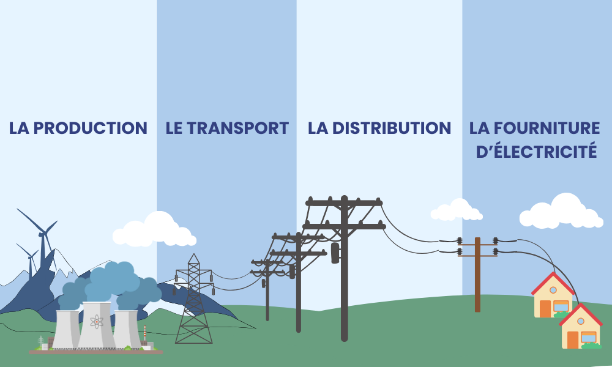

MODULE 6
LES RÉSEAUX ÉLECTRIQUES
L'énergie électrique est une quantité totale de travail ou d'énergie que l'électricité peut produire ou consommer dans un certain laps de temps. Elle est mesurée en joules (J) ou en kilowattheures (kWh) dans le contexte de l'électricité.
L'énergie électrique est une grandeur cumulative, ce qui signifie qu'elle s'accumule au fil du temps. Par exemple, lorsque vous laissez un appareil électronique fonctionner pendant une heure à une certaine puissance, l'énergie électrique consommée est mesurée en kilowattheures (kWh).
La puissance électrique est une grandeur instantanée qui indique combien d'énergie est transférée (générée ou consommée) par unité de temps. Elle est mesurée en watts (W) ou en kilowatts (kW). Par exemple, une ampoule de 100 watts consomme ou produit 100 watts d'énergie électrique à un moment donné.
Le fonctionnement des réseaux électriques en France repose sur quatre étapes clés : la production, le transport, la distribution et la fourniture d'électricité. La production et la fourniture sont des activités concurrentielles, tandis que le transport et la distribution sont des activités régulées.

La première étape concerne la production d'électricité, réalisée dans divers types de centrales électriques réparties sur le territoire français, incluant des centrales nucléaires, thermiques au charbon, au gaz naturel, au fioul, des centrales hydroélectriques, des parcs éoliens et des installations solaires. Ces centrales convertissent diverses sources d'énergie en électricité, avec une prédominance de la production nucléaire en France.
Ensuite, l'électricité produite est transportée sur de longues distances via un réseau de lignes électriques à haute tension, permettant de minimiser les pertes d'énergie sur de grandes distances. Cette électricité est ensuite abaissée à une tension plus basse grâce à des transformateurs et distribuée à travers un réseau de lignes électriques de moyenne et basse tension pour atteindre les zones urbaines et rurales.
Les consommateurs, qu'il s'agisse de ménages, d'entreprises ou d'usines, utilisent l'électricité pour alimenter leurs appareils, équipements et machines. La consommation d'électricité varie en fonction des besoins de chaque consommateur et de l'utilisation spécifique de l'électricité.
Le réseau électrique est conçu pour maintenir en permanence l'équilibre entre la production et la consommation d'électricité. Les gestionnaires de réseaux électriques, tels que RTE (Réseau de Transport d'Électricité) pour la haute tension et les distributeurs locaux d'électricité pour la basse tension, surveillent en temps réel la demande d'électricité. Ils ajustent ensuite la production pour garantir un équilibre constant, assurant ainsi une disponibilité fiable de l'électricité pour répondre aux besoins de la société.
Le bon fonctionnement du réseau électrique en France nécessite une coordination efficace entre la production, le transport, la distribution et la fourniture d'électricité, avec des acteurs compétitifs et régulés travaillant ensemble pour assurer une alimentation électrique fiable à l'échelle nationale.